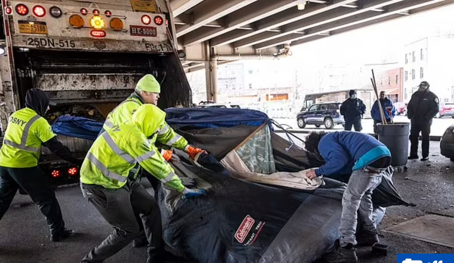

Timeline photos
Here's a picture of a homeless man (Michael Rodriguez, who has been living under a raised section of the Brooklyn-Queens Expressway for the past two years) desperately grabbing a few more of his belongings as the City of New York enacts their inhumane Nazi-esque sweep of 239 encampments in their city.
So far, Mayor Eric Adams leveled 239 of the 244 homeless encampments identified in the city.
Of all the people's lives they have destroyed, 5 chose to go into the shelter system.
Reasons for not going into a shelter include but are not limited to:
* Violence in the shelter.
* Drug use in the shelter.
* Extreme mental illness in the shelter.
* No doors on bathroom stalls.
* Gang showers
* Not able to live with pets.
* Not able to live with human partners.
* Not able to keep most belongings.
* Being thrown out each and every morning with nowhere to go the rest of the day.
THE WAR ON HOMELESS PEOPLE IN AMERICA WOULD BE CONSIDERED A CRIME AGAINST HUMANITY IN ANY OTHER CONTEXT. But because we all hate "dirty, no good, lazy, addicted homeless people who piss and shit on the sidewalk (because they have nowhere else to go)," it's completely acceptable.